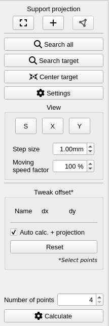
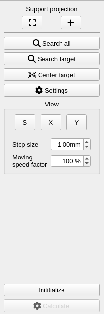

3D-Setup
The 3D-Setup application is a stand-alone client application that can directly communicate with the ZLP-Service. With this tool, you can create coordinate systems and assign projectors and reference points, calculate drift compensation and use tweaking.
Start 3D-Setup
The 3D-Setup application can be started over the ZLP-Manager

A user settings file is automatically loaded on startup. The file contains the last window size and position, whether tweaking was activated and which view settings were set the last time. The file will be saved automatically after closing the 3D-Setup.
Save and load the current configuration
There is a possibility to save and load all coordinate system and drift compensation objects in a *.toml file.
Save
On save, all created coordinate systems and drift compensation objects are saved.
- Open the menu at "File" and press "Save configuration..."
- Enter a file name and press "Save"
- A *.toml file will be created. The file can be edited.
Load
On load, all coordinate systems and drift compensation objects will be removed from the Service and replaced by the contents of the file. If you don't want to lose the current configuration, first perform the steps under Save.
- Open the menu at "File" and press "Load configuration..."
- Navigate to the desired *.toml file and press "Load"
- The complete data will be loaded from the file and the view will update automatically
Overview Tab
The 3D-Setup application starts up with the overview tab.
In the overview tab, the coordinate systems are created and assigned to the projectors and reference points.
Create a coordinate system
On the left spin box area, a list of available coordinate systems is displayed. Coordinate systems can be created in two ways:
- Press the [+] button. The coordinate system name can be set freely and 4 reference points (T1-4, x=y=z= 0) are automatically created.
- Press the [Load] button to load a *.ref file. This will create a coordinate system with the same name as the ref file and load the included reference points.
Edit coordinate system
To edit the coordinate system, select the coordinate system and open the context menu (right-click on selected elements)
Assign projector and reference points to coordinate system
On the right spin box area all connected projectors and the loaded or created reference points are displayed. To add a projector to the coordinate system, select the projector with the mouse, open the context menu and press "Add". To assign the reference points to the projector, select the reference points in the table, open the context menu and press "Add to {ProjectorSerialNumber}" The assigned elements will be displayed as children of the projector in the middle.
Edit reference points
The points can be edited in the table "Reference point". To edit the values you have the following options:
- add: press the [+] button, and a new reference point with the name "T{index}" will be added
- remove: select reference point(s) and press the [-] button
- edit: double-click on the cell you want to edit and enter a new value
- replace all: press the "Load reference point" button and load another *.ref file
Remove projectors
Projectors can only be removed, if they are no longer connected to the Service, that means deactivated. Otherwise the projector would be reappear in the list after removal. To remove a projector, select the desired one, open the context menu and press "Delete".
Setup Tab
In the setup tab, the reference points of each projector will be assigned to the target reference points and a setup matrix will be calculated
Set up a coordinate system
To set up a coordinate system do the following steps:
- Select one coordinate system from the combo box
- Select one projector you want to set up and press the left arrow to display the assigned reference points
- Project the max field and the center cross of the projector to assign the projector to the target. The target has to be inside the borders of the max field and for a more accurate setup assign the center cross to center of the target
- Select one reference point in the list. The projector starts the projection of the following element [+] (shows a center cross and search area square)
- Move the element to the corresponding reference point on the target. Press and hold the left mouse cursor for normal speed or the right mouse cursor for slow speed. ...
- Assign each element on the target and start a point search if reflector points are available
- Press calculate and confirm the dialog if the deviations are ok
- The projector is set up. This is visualized by an M-Symbol next to the projector
- Redo steps 1-8 for the other projectors in the list
Tweaking
Tweaking is used to fix an inaccurate projection if the corresponding reference points on the target system, do not fit exactly. For every reference point, a tweak offset can be set.
To set the tweak offset do the following steps:
- Select the coordinate system whit the inaccuracy
- Select one projector
- Open the settings dialog
- Activate the checkbox "Activate tweaking" -> in the ToolBar a new dialog appears (Note: On default, the transformation will be updated automatically if the tweak offset will be changed. Furthermore, if the utility projection (control field) is activated for validation, the projection will be automatically reloaded. To deactivate this automatism uncheck the checkbox "Auto calc. + projection". In this case, the calculation of the transformation has to be triggered manually)
- Select one or multiple trace points and set the tweak offset
- Check the projection to prove if the inaccuracy is compensated
- Repeat steps 3-4 until the projection is fine
- To reset the tweak offset, select the desired trace points and press "Reset"
Drift compensation Tab
In the drift compensation tab, a drift compensation matrix will be calculated to compensate for a projector drift. A drift is recognizable by an inaccurate projection that occurs after a while of use in the production environment
Initialize compensation
The compensation will be set for each projector and will be applied to all assigned coordinate systems. To initialize the drift compensation do the following steps:
- Select a projector
- Activate the drift compensation by checking the checkbox "Activate"
- Select a coordinate system to define in which coordinate system the drift compensation points are located. This can only be determined approximately, there are no real coordinates for the drift compensation points. If the dc points are more or less parallel or otherwise related to the coordinate system use the custom plane option.
- Create minimum of 4 drift compensation points by pressing the button [+]
- Select one of the drift compensation points in the list. The projector starts the projection of the following element [+] (shows a center cross and search area rectangle)
- Move the element to the corresponding drift compensation point on the target. Press and hold the left mouse cursor for normal speed or the right mouse cursor for slow speed. ...
- Assign each element on the target and start a point search if reflector points are available
- Press "Initialize" to set up the projector this is now the initial position from this the displacement can be determined. The drift compensation matrix will only be calculated when the user realises, that the projection is getting inaccuracy. Then go on with step Calculate drift compensation matrix
- The projector is initialized
Calculate drift compensation matrix
If a drift is recognized do the following steps:
- Open the 3D-Setup
- Navigate to the "Drift compensation" Tab
- Select the projector that has drifted and press "Search all"
- If minimum 4 points are found press "Calcuate" to calculate the drift (NOTE: Do not press Initialize otherwise the start values and the transformation matrix will be reset)
- The successfully calculated drift compensation is visualized by an M-Symbol in front of the projector name inside the combo box
Settings dialog
The settings dialog offers the possibility to set the global search parameters and the Setup tab contains also the option "Activate tweaking".
Toolbar
The toolbar, found on the right side of the 3D-Setup, allows the final setup of a projector as well as an optional drift compensation. In addition, auxiliary projections can be executed and the view settings can be set.
| Toolbar (Setup) | Toolbar (Drift compensation) |
|---|---|
|  |  |
Auxiliary Projections
Both toolbars allow the auxiliary projections "[ ] Max field" and "[+] Center cross". The projection "Control field" is reserved for setup only.
Search and Calculate
Both toolbars offer the ability to search for individual or all points, center a point, and calculate a transformation. You can also use "Settings" to open the settings dialog briefly described above.
View
Both toolbars offer the ability to change the orientation (s, x, y), the step width and the speed of the mouse movement.
Tweak offset
If Tweaking is enabled in the settings dialog of the Setup tab, offset values (dx, dy) can be set and undone for each point in the toolbar.
Number of reference points
The number of reference points that must be at least present in order to perform a calculation can be set in the setup toolbar. There must be at least four reference points.
Initialize and calculate drift compensation
After the drift equalization has been set up, it still needs to be initialized. If a drift of the projector is noticed later, all points should be searched and recalculated. An initialization should not be done!